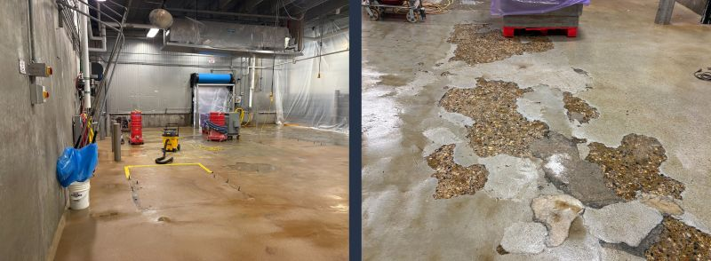
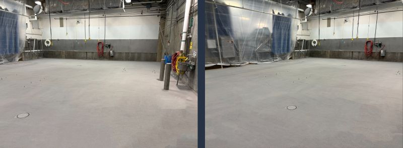

If you work in a food plant, you have seen a floor like this before.
Maybe it is a patch that did not hold, exposed aggregate near a drain, or a spot that has been repaired three times over. It is the kind of area that will not pass the next audit.

Why These Spots Keep Coming Back
Small floor failures rarely stay small in a wet processing environment. Water, cleaning chemicals, traffic, and thermal cycling keep working into the weak spot. If the repair does not bond to a properly prepared substrate, or if it leaves an open edge at a drain or wall, the next washdown starts attacking it again.
That is how facilities end up repairing the same area over and over.
What Should Be There Instead
The better answer is a continuous system: SaniCrete STX with SaniCrete VR cant cove where the floor meets walls, curbs, and vertical transitions. That gives the sanitation team a cleanable surface without open joints or ragged edges.

A food plant floor should be built for the environment it lives in. That means proper surface preparation, compatible materials, slope that moves water, and transitions that do not become bacteria harborage points.
Audit-Ready Flooring Details
- Seamless resinous flooring that eliminates loose edges and failed patch lines
- Integrated cove base for cleanable wall-to-floor transitions
- Slip-resistant texture selected for the plant's traffic and washdown requirements
- Materials designed for moisture, chemicals, impact, and thermal shock